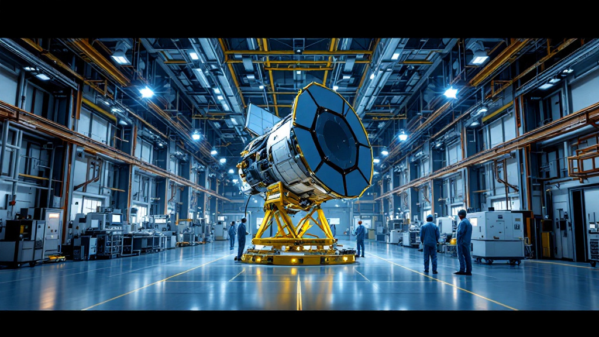

Space Business
Funding, contracts, and the space industry


Thales Alenia Space to Establish Dedicated Company for Cargo Return Services
European Spaceflight


FCC Approves Elon Musk’s One Million Orbital Data Centers
SpacePolicyOnline.com
 Illustrative image
Illustrative image
Euclid's Record-Setting Quasar Probes Black Hole Formation
Universe Today


Eye of the Sahara
NASA



Illustrative image
Comet Encke's Shape and Heat Revealed in Thermal Glow
Universe Today


White House Requests Billions for NASA, Golden Dome in Next CR
SpacePolicyOnline.com


Why Mega-Constellations Have a Hidden Space Junk Blind Spot
Universe Today


Northrop books sixth Falcon 9 for Cygnus as Antares 330 waits
NASASpaceflight